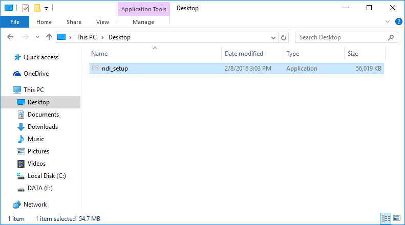
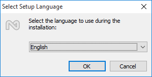
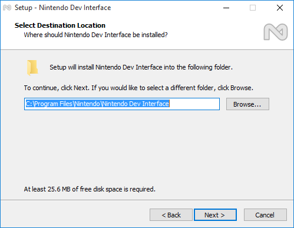
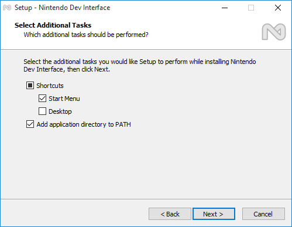
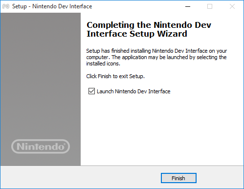
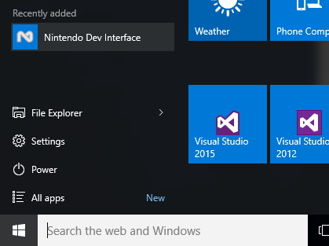
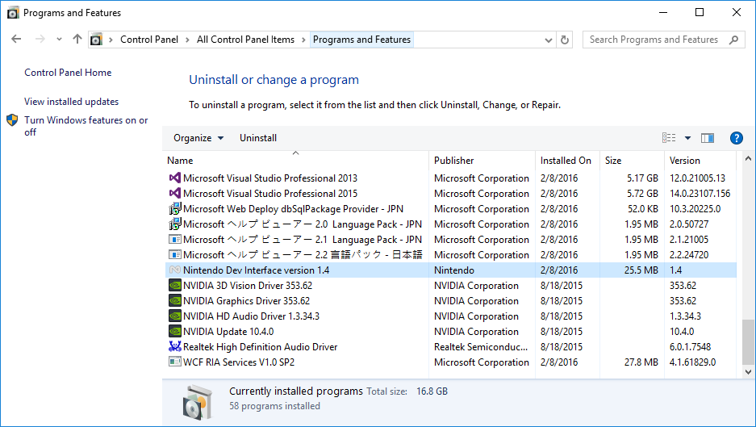

Nintendo Dev Interface (NDI) is a tool to set up and manage the development environment.
It can be used to manage the development environment manager and to update the SDEV firmware.
You must have Windows administrator rights to install NDI.
| Procedure | Operation |
|---|---|
| 1 |
Download the NDI installer package from the Nintendo Developer Portal. |
| 2 |
Double-click the installer from the downloaded package to run it.  |
| 3 |
Select the language for installation.  |
| 4 |
Follow the installer instructions to configure the program. You can change the installation path from this screen.  On this screen, specify shortcut creation and registration to the Start Menu. If you select Add application directory to PATH, the path to the NDI program will be added. This option is useful when calling NDI functions from a command line.  To start the installation, click Next to proceed.
Note: NDI requires .NET Framework 4.6.1 to run. |
| 5 |
To finish the installation, click Finish. Note: If you have installed .NET Framework 4.6.1 using the preceding procedure, before you start Nintendo Dev Interface, restart the computer and then run it from the Start menu.  A shortcut to the program will be added to the Start menu.  |
NDI can be uninstalled just like any other Windows application, using the Uninstall, Change, and Repair options in the Programs and Features Control Panel.

CONFIDENTIAL